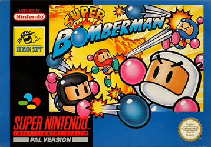
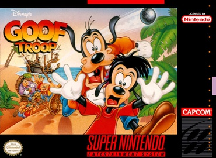
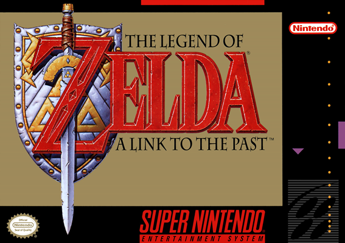
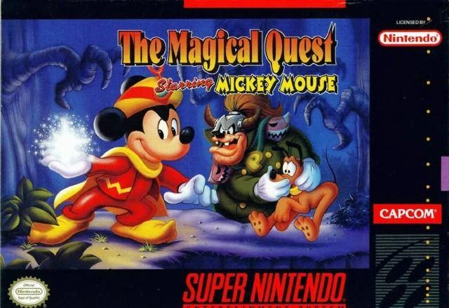

Animaniacs
A primeira vez que joguei Animaniacs, foi um verdadeiro teste de paciência e inteligência (coisas que eu claramente não tinha na época). O jogo começa com os três personagens — Yakko, Wakko e Dot — e você precisa alternar entre eles para avançar. Confesso que, no início, a mecânica me deixou mais perdido que cachorro em festa de gato.
Mas o que realmente marcou essa época foram os Tazos que vinham nos salgadinhos. Era a moeda de troca, o tesouro sagrado da infância. Colecionávamos, trocávamos e, claro, batíamos uns nos outros para ver quem ganhava mais. E aqui entra o vilão da minha história: o Marlon. Esse sujeito tinha um talento nato para roubar meus Tazos. Era como se ele fosse um ninja das figurinhas, sempre sumindo com meus preciosos discos de plástico.
Eu até tentava revidar, mas, sinceramente, eu apanhava mais do que um saco de pancadas em aula de boxe. No fim, acabei superando essa fase traumática (e aprendi a esconder melhor meus Tazos). Hoje, olho para trás e rio, mas, se eu encontrar o Marlon por aí, ainda vou cobrar aqueles Tazos que ele me deve..

Area 88
Dos jogos sérios que eu joguei, Area 88 era um dos que mais me fazia sentir um verdadeiro piloto de combate (ou pelo menos um aspirante a herói dos céus). A mecânica de escolher um piloto e ir melhorando seu avião era incrível. Eu sempre escolhia um favorito e focava em deixá-lo no nível máximo, como se ele fosse meu filho predileto. Só consegui zerar o jogo duas vezes, porque, convenhamos, a dificuldade era de lascar.
O jogo tinha umas regras malucas. Por exemplo, se você fosse atingido por um tiro, não podia simplesmente chorar e esperar o pior. Não, você tinha que desviar de todos os outros tiros até o sinal de alerta parar de tocar. Só aí sua barra de vida diminuía. Era tipo um treinamento militar: "Ah, foi atingido? Então se vira aí, soldado!"
E os chefes? Nossa, os chefes eram o verdadeiro pesadelo. Tinha missão que você voava até o final do mapa, dava meia-volta e ainda tinha que enfrentar um chefão que parecia ter tomado café com Red Bull. Era desesperador, mas também viciante.
No fim, Area 88 era daqueles jogos que te faziam sentir um gênio quando você passava de fase e um completo idiota quando perdia. Mas, mesmo com toda a dificuldade, ainda tenho um carinho enorme por ele. Afinal, quem não gosta de um desafio que faz você questionar suas habilidades (e sua sanidade)?

Super Bomberman
Ah, Super Bomberman... Esse jogo é um dos meus favoritos dessa lista, e sim, eu sou um fã boy assumido de Bomberman. Não tem como não ser! A primeira vez que joguei foi no fliperama do Miro, na esquina de casa. Lembro como se fosse hoje: eu estava lá, de bobeira, quando vi o pai do meu colega de classe, o seu João, jogando como um verdadeiro mestre das bombas. Fiquei fascinado!
O seu João e o filho chegavam até o último chefe, aquela nave em formato de ovo que parecia invencível. Eles ficavam lá, bombardeando tudo, mas nunca descobriam como derrotar o tal do ovo voador. Anos depois, quando finalmente descobri o segredo em casa, já era tarde: todo mundo já sabia. Fiquei me sentindo um gênio atrasado.
Mas o que realmente me pega nesse jogo não são só as explosões (que, convenhamos, são incríveis), mas a nostalgia que ele traz. Toda vez que jogo, me lembro daquela época da quarta série na escola Padre Romeu Mecca, em Itapevi. Era só alegria, bagunça e, claro, muita estratégia para não explodir os amigos (ou a si mesmo).
Super Bomberman é daqueles jogos que te transportam para um tempo em que a vida era mais simples, e a única coisa que importava era descobrir como vencer o chefe ovo sem explodir metade do mapa no processo. Bons tempos, hein?
Super Bomberman 2
Esse jogo eu só fui jogar muitos anos depois do lançamento. Na época, ele não estava na locadora Start Games (aquela famosa que todo mundo frequentava). Na verdade, ele só apareceu lá quase no fim da era Super Nintendo, quando eu já estava quase me aposentando dos videogames.
E sabe o que esse jogo me causa? Medo. Sim, medo! E por quê? Porque Bomberman 2 é daqueles jogos que não te deixam sair por aí correndo e explodindo tudo feito um louco. Não, não! Aqui você tem que pensar, planejar e, o mais importante, explodir os botões certos para liberar a porta de saída. Era tipo um quebra-cabeça explosivo, onde uma decisão errada podia te deixar preso no mapa, olhando para as paredes e se perguntando onde foi que você errou na vida.
Era difícil? Era. Mas nada impossível. Só precisava de paciência (algo que eu, confesso, não tinha muito na época). Hoje, olho para trás e penso: "Caramba, eu devia ter jogado mais isso, era um treino mental disfarçado de jogo de explosão". Mas, naquela época, eu só queria mesmo era ver tudo virar pó.
Bomberman 3
Dessa lista, Super Bomberman 3 foi um dos primeiros jogos que joguei em casa. Não joguei os jogos em ordem (afinal, quem precisa de cronologia quando se tem diversão?), mas lembro bem que foi esse e o Puzzle Bobble que marcaram o início da minha jornada gamer.
Esse jogo segue a mesma mecânica clássica de explodir tudo que vê pela frente, mas com um upgrade nos gráficos, que agora pareciam saídos de um anime. Foi o primeiro Bomberman que joguei na vida, e, confesso, ele me conquistou na hora. Mas nem tudo eram flores (ou bombas).
E as montarias, os Louies? Ah, esses bichinhos eram demais! Cada um tinha uma habilidade única: o verde corria mais rápido que o Flash, o roxo pulava como um canguru olímpico, o amarelo assoprava blocos como se fosse um ventilador mágico, e o marrom... bem, o marrom era o cara das bombas, colocando todas de uma vez só. Era tipo um arsenal ambulante.
Lembro que eu travava no segundo chefe, que eram dois caquitos mexicanos. Nossa, que raiva! Era frustrante demais. Só consegui zerar o jogo anos depois, quando já estava com 12 anos (e uma paciência muito maior). Na primeira vez que joguei, com 7 anos, eu achava que aqueles caquitos eram imbatíveis. Mal sabia eu que o verdadeiro desafio era a minha falta de estratégia.
E, olha, esse jogo também me traz uma memória... digamos, peculiar. Lembro que, na época, teve um furto em casa. Levaram a bicicleta do meu tio. Mas os caras não deviam ser muito bons de estratégia, porque ficaram rodando com ela no mesmo bairro. Meu tio recuperou a bike no dia seguinte. É, nem os ladrões sabiam fugir direito. "Oh, derrota!"
No fim, Super Bomberman 3 é mais que um jogo pra mim. É uma cápsula do tempo que guarda memórias de frustrações, vitórias, Louies saltitantes e até de uma bicicleta roubada (e recuperada). Bons tempos!

Bomberman 4
Pra mim, Super Bomberman 4 é o melhor da série no Super Nintendo. Sério, esse jogo é pura magia! O modo batalha é incrível, e cada personagem tem uma habilidade única (exceto o Bomberman branco e o preto, que ficaram com a mesmice de sempre).
E as montarias? Ah, os Louies voltaram, mas dessa vez com um visual renovado e ainda mais diversificado. Cada um tinha habilidades parecidas com as do Bomberman 3 (correr, pular, assoprar blocos e soltar bombas de uma vez), mas agora sem a aparência de cangurus. Era como se tivessem feito um upgrade nos bichinhos, deixando-os mais estilosos e funcionais.
Curiosamente, joguei esse depois do Bomberman 5, que eu pegava emprestado de um amigo. Quando finalmente consegui alugar o Bomberman 4 na lendária Escorpion Games, tive um déjà vu. Os mapas eram parecidíssimos com os do Bomberman 5, e eu ficava me perguntando: "Já joguei isso ou tô ficando maluco?" Spoiler: não tinha jogado, mas quase enlouqueci tentando entender.
Uma das mecânicas mais divertidas era a de jogar o seu parceiro com a luva. Sempre que aparecia um portal, eu não pensava duas vezes: meu irmão mais novo, o Gean, ia parar lá no outro lado do mapa, querendo ou não. Passávamos tardes inteiras jogando juntos nos finais de semana, rindo e brigando (mais brigando, na verdade).
E os chefes? Ah, os chefes eram tão fáceis que até parecia que estavam de folga. Zerava o jogo sem muito esforço, mas isso não tirava a diversão. Já o modo batalha tinha um toque especial: um modo quest onde você enfrentava os Bad Bombers em uma arena elétrica. Era caótico, divertido e viciante.
Sem dúvida, Super Bomberman 4 era (e ainda é) um jogo incrível. E, claro, ele me faz lembrar de tardes bem gastas com meu irmão, explodindo tudo, rindo até cansar e montando naqueles Louies que eram quase como nossos parceiros de crime virtual.
Bomberman 5
Pronto! Esse é o último da lista de Super Nintendo, e que jogo! Super Bomberman 5 foi um que peguei emprestado do Emerson (o famoso Tatinha — sim, eu sei que é um apelido de menina, mas nunca perguntei o motivo, então fica o mistério). Joguei ele por um bom tempo, e, confesso, é aquele clássico "mais do mesmo", mas com um toque especial.
Aqui, a mecânica de pegar os personagens foi retirada, e os Bad Bombers perderam seus poderes no modo batalha. Mas o que esse jogo tem de interessante? A nostalgia pura! Cada mundo representa um jogo da série Bomberman. Se você leu minha história sobre o Bomberman 4, deve lembrar que eu tinha a impressão de já ter jogado aquilo antes. Pois é, o mundo 4 era basicamente uma revisita ao Bomberman 4, com todas as fases do jogo anterior. Já os mundos 5 e 6 eram originais, criados especialmente para esse jogo.
E tem mais: dois finais! Um bom e um ruim. No final ruim, os Bad Bombers fogem, e você fica com aquela sensação de "perdi meu tempo". Já no final bom, você precisa achar os portais corretos desde o mundo 1 até o mundo 5. Era tipo uma caça ao tesouro, só que com bombas e muita paciência. O último chefe, apesar de não ser tão difícil quanto o Bagular (aquele monstro do Bomberman 3), ainda era bem desafiador.
E os Louies? Ah, eles voltaram com a aparência de cangurus, mas com um visual renovado. O verde, que corre rápido, agora é gordinho. A amarela virou uma menina com um laço vermelho na cabeça. O roxo ganhou um "pula-pula" (imagino que ele tenha feito aulas de parkour). O azul, que esqueci de mencionar no Bomberman 3, apareceu com uma camiseta de futebol e chutava as bombas como um craque. E o marrom? Esse ganhou uma cartola pra parecer um mágico. Sério, dava pra fazer um spin-off só com esses bichinhos.
Esse jogo me faz lembrar da quarta série, quando eu pegava jogos emprestados, saía de casa pra jogar bola, pegar goiabas e brincar na rua. Também me traz memórias do meu "rival" Robson. Esse cara era o terror da minha infância — eu apanhava dele direto e tinha um medo danado. Mas essa história fica pra quando eu falar de Fatal Fury.
No fim, Super Bomberman 5 é um jogo que mistura nostalgia, desafio e um pouco de caos. E, claro, me faz lembrar de uma época em que a vida era mais simples, e o maior problema era decidir se eu ia explodir blocos ou fugir do Robson.

Boogerman
Esse jogo não é lá aquelas coisas, mas me ensinou uma lição valiosa: podemos tentar antes de desistir (e, às vezes, a gente deveria desistir). Boogerman é aquele jogo de um "super-herói" que usa nojeiras como armas: catarro, arrotos, puns e até caca de nariz. Sim, você leu certo. É basicamente um herói do asco.
Lembro que alugamos esse jogo achando que seria fácil. Que engano! Boogerman entra direto para a galeria dos jogos mais difíceis que já joguei. Eu me mordia de raiva quando morria com apenas 3 pontos de dano. Quando finalmente passei do primeiro chefe, o Hickboy (um caipira com uma galinha), pensei: "Por que não tentar zerar esse jogo?" Spoiler: eu definitivamente deveria ter parado ali.
Mas minha mente teimosa não deixou. Aluguei o jogo várias vezes, determinado a vencer. Quando consegui passar do segundo chefe, a Revolta (uma bruxa), achei que tinha acabado. Mas não, o jogo decidiu me torturar com a área mais nojenta e chata de todas, cheia de inimigos que explodiam pus. Sério, dava até ânsia.
Aí veio o Flyboy, ou Menino Mosca, que foi meu terror pessoal. Toda vez que eu tinha que enfrentá-lo, eu queria morrer (ou matar alguém). Depois, veio um mundo aleatório misturando cavernas e montanhas, e o pior de todos: o chefe Deodor Ant. Esse inseto maldito me fez travar por anos. Só consegui derrotá-lo muito tempo depois, com muita paciência e um pouco de sorte.
E a cereja do bolo? Meu irmão do meio, o Gilson, descobriu no chute o password do último mundo. Sim, ele acertou de cara! Graças a isso, conseguimos chegar ao último chefe, o Booger Meister, que, felizmente, seguia padrões fáceis de decorar. Zeramos o jogo, mas não sem antes passar por muita raiva, nojo e frustração.
No fim, Boogerman é daqueles jogos que você ama odiar. Ele me ensinou que, às vezes, a persistência pode ser recompensada (ou pode te fazer perder horas de vida). E, claro, me fez rir muito com as nojeiras e as memórias de tentar vencer aquele caipira e sua galinha.

Dragon Ball Z 2
Esse jogo me lembra de quando eu estava na terceira série (hoje chamada de quarto ano). Eu jogava, mas não conhecia o anime nem o mangá. Achava que o Gohan era o Goku (sim, eu era bem leigo), e só descobri que ele não era jogável sem código muito tempo depois.
Esse jogo também me faz lembrar das encrencas que eu me metia na escola. Naquela época, eu pegava cartuchos emprestados do Rodrigo, que a gente chamava de "Rodrigo Cigarrinho" (não me pergunte o porquê, nunca descobri). Ele era brigão e, às vezes, até injusto — lembrava muito o Robson (que vou comentar quando falar de Fatal Fury), pois tinha o ego inflado e zero senso de justiça.
Apesar de ser intimidado por ele, o Rodrigo dava acesso a muitas coisas que a gente não tinha, igual ao famoso Dão (que vou comentar quando falar de Final Fight). Cheguei a comprar muitas revistas e cartuchos com ele, usando o dinheiro das latinhas que eu juntava. Era um negócio meio "toma lá, dá cá", mas funcionava.
Nessa época, minha mãe tentou me colocar em aulas de kickboxing (que vou comentar quando falar de Congo's Caper), mas não deu muito certo. Ainda assim, aprendi a observar bem as coisas antes de agir — o que, convenhamos, foi uma lição valiosa, já que eu fazia muita besteira.
Dragon Ball Z 2 me ensinou que nem sempre bater é a melhor estratégia. Observar e atacar no momento certo pode fechar a luta, principalmente contra o Broly, aquele saiyajin overpower lendário que me fez passar muita raiva.
No fim, esse jogo e essa fase da minha vida têm algo em comum: ambos eram cheios de desafios, mas também de lições que, hoje, me fazem rir (e agradecer por ter sobrevivido).

Congos Caper
Esse jogo é lindo, e eu tinha muita vontade de jogá-lo. A primeira vez que o vi foi no fliperama do Miro, na esquina de casa. Assim como Super Bomberman, ele tinha um chefe que ninguém conseguia passar — o primeiro chefe, pra ser mais exato. Ninguém entendia a mecânica de bater nos homenzinhos da caverna para que eles ricocheteassem e acertassem o dinossauro. Era tipo um quebra-cabeça que só os mais persistentes (ou teimosos) conseguiam resolver.
Lembro que o Alex tinha esse jogo. Ele e o irmão sempre foram muito gente boa, e até hoje eu gosto deles, apesar de, muitos anos depois, eles terem tentado me bater. Na época, eu não revidei — só desviei e tentei acalmá-los, porque não via motivos pra lutar. Aprendi nas aulas de kickboxing a ter disciplina, e, mesmo que o professor incentivasse a luta, eu preferia correr. Até hoje sou assim: não vejo sentido em brigar por qualquer coisa.
Nessa época, meu irmão Gilson e eu treinávamos kickboxing, mas saímos depois de um tempo porque alguns alunos começaram a nos ameaçar, usando a arte marcial para o mal. Anos depois, comecei a treinar taekwondo com o professor Thiago (vou comentar isso quando falar de Final Fighter 2).
Essa também foi uma época tensa na minha vida. Meus tios Carlos e Moisés foram embora para o Piauí, sua terra natal. Não sei bem o motivo, mas ouvi falar que eles mexeram com quem não deviam. Eu estava na terceira série, me metia em muita encrenca e não tinha noção dos perigos da vida. Hoje, sou bem diferente do que era naquela época, mas as memórias ficaram.
Voltando ao jogo, consegui finalizar Congo's Caper depois de muito tempo. Aquele dragão me fez passar uma raiva danada, mas, anos depois, entendi que ele tinha padrões que dava pra seguir e derrotar sem levar dano.
No fim, Congo's Caper e essa fase da minha vida têm algo em comum: ambos eram cheios de desafios, mas também de lições que, hoje, me fazem rir (e agradecer por ter sobrevivido).

Donkey Kong Country
Em desenvolvimento
üöß Em desenvolvimento

Donkey Kong Country 2
Em desenvolvimento
üöß Em desenvolvimento

Donkey Kong Country 3
Em desenvolvimento
üöß Em desenvolvimento

Final Fight
Em desenvolvimento
üöß Em desenvolvimento
Final Fight 2
Em desenvolvimento
üöß Em desenvolvimento

Final Fight 3
Em desenvolvimento
üöß Em desenvolvimento
Final Fantasy 2
Em desenvolvimento
üöß Em desenvolvimento

Goof and Troop
Em desenvolvimento
üöß Em desenvolvimento

Joe e Mac 2
Em desenvolvimento
üöß Em desenvolvimento

Killer Instinct
Em desenvolvimento
üöß Em desenvolvimento
Lamborghini American Challenge
Esse jogo eu pegava emprestado com o Reinaldo, mas ele parou de me emprestar porque a gente acabou brigando. Não lembro o motivo exato, mas sei que partiu de mim — eu realmente era um babaca naquela época. Como andava com gente que resolvia tudo no soco, achava que esse era o jeito certo de lidar com as coisas. Hoje, claro, vejo que estava redondamente enganado.
Lamborghini American Challenge era um jogo de corridas em velocidade extrema, com um turbo que só podia ser usado uma vez por corrida, mas durava bastante. Lembro que eu não sabia como avançar no jogo, mas, depois de muitos anos, descobri que era preciso ganhar várias corridas para que a estrela do desafio aparecesse e permitisse avançar de divisão.
Esse jogo era muito bom, e até envolvia apostas, mas nada que fosse corromper o jogador. Era mais um detalhe pra dar um tempero a mais nas corridas.
No fim, Lamborghini American Challenge me faz lembrar de uma época em que eu estava aprendendo (ou tentando aprender) a lidar com as pessoas e com os desafios da vida. E, assim como no jogo, às vezes a gente só precisa de um pouco de paciência e estratégia pra avançar.

Lagoon
Esse jogo é um RPG de ação onde você usa uma espada com uma área de ataque minúscula — tão minúscula que você precisa quase abraçar os inimigos pra acertá-los. E, claro, tinha que voltar várias vezes nos mesmos lugares pra acumular experiência. Era tipo um treino de paciência, mas com gráficos de 16 bits.
Lagoon me fez perceber que eu precisava aprender inglês, porque o jogo te dava todas as informações necessárias — desde que você soubesse onde e como procurar. Tinha que conversar com os NPCs certos pra conseguir as dicas certas. Consegui terminar o jogo uma vez, mas foi uma vitória suada. Lembro que só eu em casa jogava ele, porque era difícil demais e exigia muita persistência.
Esse jogo me lembra da época em que eu pegava cartuchos emprestado com os irmãos Bruno e Rafael, que também iam pra igreja central. Não lembro quais jogos eu pegava com eles, mas emprestei Lagoon, e o Bruno conseguiu terminar. Como ele sabia inglês, pegou tudo que o jogo tinha pra oferecer.
Nessa época, eu era bem confuso e não sabia pra onde ir na vida. Mas, assim como no jogo, fui persistindo e, no fim, acabei encontrando meu caminho.
No fim, Lagoon é daqueles jogos que, mesmo sendo difíceis e um pouco frustrantes, te ensinam a importância da persistência — e de saber inglês.

Lemmings
Esse jogo é de estratégia pura, onde você precisa salvar uma porcentagem dos lemmings (aqueles bichinhos verdes que parecem ter um pacto com a autodestruição) para avançar para a próxima fase. É um jogo que exige paciência, planejamento e, às vezes, um pouco de sorte. E, assim como os lemmings, eu também estava tentando encontrar meu caminho em uma fase bem obscura da minha vida, lá por volta de 2002.
Nessa época, peguei Lemmings emprestado do Thiago, um colega que ia pra igreja comigo, o irmão Diego e as irmãs Vanessa e Angelica. Eles eram gente boa pra caramba — acho que até hoje estão por aí, provavelmente cuidando de vidas como enfermeiros. Eu perdi o contato com eles porque, bem, eu aprontei (mas essa história fica pra quando falarmos de Dragon Ball).
Eu estava numa fase bem dark, sempre sozinho e meio que "afim" de alguém, mas acho que era mais carência de atenção do que qualquer outra coisa. E, como sempre, eu confundia as coisas. Foi aí que conheci a Jéssica, uma menina que eu achava linda e que, claro, virou personagem das minhas histórias em quadrinhos (vou contar tudo quando falar de Mega Man X2).
Assim como a Noely (da história do Judge Dredd), a Jéssica nunca foi má comigo. Ela sempre deixou as coisas claras, mas eu, teimoso, via passarinho verde onde não tinha. Lembro que tentei de tudo pra chamar a atenção dela, desde desenhos até estratégias dignas de Lemmings. Nada funcionava. E, pra piorar, tinha uma colega da igreja que estava afim de um outro colega, e os dois acabaram ficando. A gente chorou — não eu por causa da Jéssica, mas pela dor da minha colega. Foi bem doido.
Mas eu não desisti. Continuei indo pra igreja, "stalkeando" a Jéssica e até entrei num curso de espanhol na escola dela, que ficava a mais de 4 km da minha casa. Fiz amizade com o pessoal da sala dela e, num ato de "generosidade", emprestei minha pasta de desenhos pra ela mostrar pra turma. Na semana seguinte, ela me disse que passou mal na sala e, quando voltou, a pasta tinha sumido. Triste, mas real.
Voltando ao jogo, Lemmings era difícil pra caramba, mas me mantinha ocupado por horas, tentando salvar aqueles bichinhos verdes que insistiam em se jogar de penhascos. Cheguei perto do final, mas nunca zerei. Talvez porque, assim como os lemmings, eu também estava tentando encontrar um caminho seguro em meio ao caos.
No fim, Lemmings e essa fase da minha vida têm algo em comum: ambos eram cheios de obstáculos, estratégias falhas e, claro, muita confusão. Mas, assim como no jogo, eu sobrevivi — mesmo que com alguns lemmings perdidos pelo caminho.

Magical Quest 3
Esse jogo foi um dos que meu irmão Gilson e o Gean alugaram junto com minha mãe. Lembro que cheguei da escola e os dois estavam jogando na fase do fundo do mar — se não me engano, era a quinta fase. A trilha sonora desse jogo era sensacional, tanto que recentemente aprendi a tocar a música dessa fase no violão.
Esse foi o último ano em que eu estudava das 11:00 às 15:00. No ano seguinte, mudei para o horário da manhã, e foi aí que as coisas começaram a ficar mais... interessantes. Esse jogo me faz lembrar da primeira vez que fiquei sem recreio por aprontar na sala de aula.
Lembro que, naquele dia, perguntei pra um colega o que tinha no almoço pra poder contar pra minha mãe e evitar que ela desconfiasse que eu estava aprontando. Spoiler: ela desconfiou mesmo assim.
No fim, Magical Quest 3 é daqueles jogos que, além de divertidos, trazem memórias de uma época em que a vida era mais simples — e as maiores preocupações eram passar de fase e não ser pego aprontando.

Megaman 7
Esse é um dos jogos que eu pegava emprestado com o Rodrigo Cigarrinho (conto mais sobre ele no texto de Dragon Ball Z 2). Ele me emprestava, mas com uma condição: eu tinha que devolver no dia seguinte. Era chato porque não dava tempo de jogar direito, e, pra piorar, eu vivia de castigo por aprontar muito na escola. Meu irmão do meio, o Gilson, sempre colaborava com as decisões da minha mãe, então eu raramente tinha tempo livre pra jogar.
Lembro de uma vez que peguei o cartucho emprestado e demorei pra devolver. Resultado: levei um soco no estômago do Rodrigo e, pra completar, uma chinelada da minha mãe. Depois desse dia, nunca mais peguei nada emprestado com ele. Preferia alugar na Start Games, onde pelo menos não tinha risco de levar porrada.
E, falando em Mega Man 7, esse jogo era difícil pra caramba. O último chefe, o Dr. Wily, era um pesadelo. Tive que alugar o jogo várias vezes até conseguir zerar. Era frustrante cair nos espinhos e levar choque daquela nave maldita, mas, no fim, consegui vencer. Esse jogo faz parte da minha galeria de "jogos que só terminei uma vez", porque, sinceramente, a raiva que ele causa não compensa zerar de novo.
No fim, Mega Man 7 e essa fase da minha vida têm algo em comum: ambos eram cheios de obstáculos, mas também de lições que, hoje, me fazem rir (e agradecer por ter sobrevivido).

Megaman X
Em desenvolvimento
üöß Em desenvolvimento

Megaman X2
Em desenvolvimento
üöß Em desenvolvimento

Mortal Kombat
Em desenvolvimento
üöß Em desenvolvimento

Mortal Kombat 3
Em desenvolvimento
üöß Em desenvolvimento

Prehistorik Man
Em desenvolvimento
üöß Em desenvolvimento

Raiden Trad
Em desenvolvimento
üöß Em desenvolvimento

Rockman and Forte
Em desenvolvimento
üöß Em desenvolvimento

Sonic Wings
Em desenvolvimento
üöß Em desenvolvimento
Stun Race
Esse jogo era ruim, mas divertia. Um jogo de carros poligonais com olhos gigantes (sim, olhos gigantes!) que pareciam saídos de um pesadelo low-poly. Era estranho, mas tinha seu charme. Aprendi que, em jogos de corrida, a estratégia nem sempre é só acelerar; às vezes, você precisa pisar no freio e pensar antes de fazer aquela curva impossível.
Mas o que realmente marcou esse jogo foram as memórias que ele traz. Lembro que foi na época do primeiro ano novo que passei no hospital. A gente estava se arrumando para passar a virada na casa do vizinho quando, do nada, bati a cabeça no telhado. E não foi qualquer batida: abriu um buraco! Sério, foi tão absurdo que até hoje me pergunto como consegui fazer aquilo.
Resultado: fomos para o pronto-socorro, e levei 4 pontos na cabeça. Chegamos em casa depois da 1 da manhã, com a virada do ano já acabada e eu, é claro, com a cabeça costurada.
Esse jogo também me lembra das filhas do vizinho, a Bruna e a Carol. Essas duas me odiavam (e, pra ser justo, eu também não era lá aquela flor que se cheire). Naquela época, eu sofria bullying na escola e, pra tentar brecar isso, acabei aceitando meu apelido: "Jamanta". Não era o melhor apelido do mundo, mas, pelo menos, eu tentava levar na esportiva.
No fim, Stunt Race FX é daqueles jogos que, mesmo sendo estranhos e meio ruins, trazem memórias que a gente não esquece. E, claro, me faz lembrar de uma época em que bater a cabeça no telhado era só mais um detalhe numa noite de ano novo cheia de altos e baixos.

Super Mario All-Stars
Esse foi o primeiro jogo em que fui feito de besta. Por quê? Meu vizinho tinha o Super Mario All-Stars, aquele cartucho lendário que incluía Super Mario Bros., Super Mario Bros.: The Lost Levels, Super Mario Bros. 2 (USA) e Super Mario Bros. 3. Ele sabia que eu queria muito aquele jogo, então me fez uma proposta "justa": 4 jogos em troca desse. E, como eu era um genio, aceitei.
Confesso que fiquei chateado por um bom tempo, mas, no fim, até valeu a pena. Esse foi o cartucho que ficou mais tempo comigo — cerca de 2 anos —, porque eu estava determinado a terminar todos os jogos. E pasmem: Super Mario Bros.: The Lost Levels era o mais difícil de todos. Aquele jogo era um teste de paciência e sanidade. Mas, no fim, consegui zerar todos, e a sensação de vitória foi incrível.
Esse jogo me lembra dos meus vizinhos, Lucas, Rafael e Bruna, que já tinham terminado Super Mario Bros. e Super Mario Bros. 3. Eles ficavam dando dicas pra gente, tipo uns "professores de Mario". Esses vizinhos sempre tinham tudo antes de todo mundo, mas essa história eu vou aprofundar quando falar de PlayStation.
No fim, Super Mario All-Stars foi um jogo que me ensinou duas lições valiosas: 1) nunca faça trocas desiguais com vizinhos espertos, e 2) persistência é a chave para vencer até os jogos mais difíceis. E, claro, me fez passar horas e horas pulando em cogumelos e tentando não morrer nos mundos mais insanos de The Lost Levels.
Super Mario RPG
Em desenvolvimento
üöß Em desenvolvimento

Super Mario World
Em desenvolvimento
üöß Em desenvolvimento
Super Mario World 2 Yoshi's Island
Em desenvolvimento
üöß Em desenvolvimento

Thunder Spirits
Em desenvolvimento
üöß Em desenvolvimento

Top Gear
Em desenvolvimento
üöß Em desenvolvimento
Top Gear 2
Em desenvolvimento
üöß Em desenvolvimento

Top Gear 3000
Em desenvolvimento
üöß Em desenvolvimento
Wild Cats
Em desenvolvimento
üöß Em desenvolvimento

Wild Guns
Em desenvolvimento
üöß Em desenvolvimento

Daffu Duck
Em desenvolvimento
üöß Em desenvolvimento
F Zero
Esse jogo me traz lembranças muito legais. As músicas são incríveis e super marcantes, principalmente a do circuito Big Blue. Sim, é um jogo de corrida com naves, mas não é qualquer corrida: é aquela que te faz passar horas tentando vencer cada campeonato, um mais difícil que o outro.
Lembro que ficava o final de semana inteiro tentando terminar as pistas, especialmente as de neve, onde o espaço entre os checkpoints era tão longo que eu nunca tinha velocidade suficiente para pular. Pelo menos, até o dia em que finalmente consegui. Foi uma vitória épica!
Esse jogo me faz lembrar da época em que eu alugava cartuchos na Start Games. Eu tinha só 10 anos, mas já ia sozinho e podia alugar 2 jogos por vez. Nessa época, eu também estava aprendendo a desenhar (vou contar mais sobre isso no texto de Mega Man & Bass). Era difícil, mas nada que a prática não resolvesse.
Consegui terminar F-Zero várias vezes, tanto no modo fácil quanto no difícil. No modo difícil, as pistas eram mais longas, mas, de alguma forma, mais fáceis de dominar. E, claro, a música Fire Field também é marcante — até hoje consigo ouvir ela na minha cabeça.
No fim, F-Zero é daqueles jogos que, além de divertidos, carregam um pedacinho da nossa história. E, assim como as pistas do jogo, a vida também tem seus altos e baixos — mas no final, a gente sempre consegue cruzar a linha de chegada.

Choplifter III
Em desenvolvimento
üöß Em desenvolvimento
Asterix
Em desenvolvimento
üöß Em desenvolvimento

Road Runner's Death Valley Rally
Em desenvolvimento
üöß Em desenvolvimento

Taz-Mania
Esse jogo tem a história mais estranha de todos que já joguei. Quando peguei Taz-Mania, eu pensei: "Ah, deve ser um jogo de aventura onde o Taz sai destruindo tudo, como nos desenhos animados". Só que não. Em vez disso, era um jogo onde você corria atrás de pintinhos (sim, pintinhos!) para lanchar. Tinha que desviar de carros, ônibus e outros obstáculos enquanto tentava comer os pobres pintos na rua. E, pra piorar, o jogo ainda tinha um limite de tempo. Era tipo um Fast Food do caos.
Lembro que me frustrei bastante com esse jogo, mas, teimoso que sou, consegui zerar muito tempo depois. Não foi fácil, mas a sensação de vitória (e alívio) foi imensa.
Esse jogo me lembra de uma história curiosa da época. Foi quando rolou aquele primeiro evento do "Fim do Mundo" segundo a teoria de Nostradamus. Todo mundo estava falando disso, e eu, criança, fiquei meio assustado. Pra piorar, a fonte do meu videogame tinha queimado, e eu precisei juntar latinhas para comprar uma nova (que era cara pra caramba). Minha mãe me levou na locadora para comprar a peça e, claro, alugar um jogo. Escolhi Robocop vs Terminator — nada como um jogo apocalíptico pra combinar com o clima do fim do mundo, né?
Lembro que na TV falavam que o mundo ia acabar no domingo. Quando fui dormir, só pensava: "Acabou". Mas, no dia seguinte, acordei e... nada. O mundo ainda estava lá, e o tal evento tinha sido "adiado". Minha mãe estava assistindo à missa na TV, e no jornal só falavam do alinhamento dos planetas. Fiquei meio decepcionado, mas também aliviado. Afinal, ainda tinha Taz-Mania para zerar e pintinhos para comer.
No fim, Taz-Mania é daqueles jogos que você ama odiar. E, mesmo com toda a bizarrice, ele me traz memórias de uma época em que o fim do mundo era só mais um motivo para juntar latinhas e alugar jogos.

Fatal Fury
Em desenvolvimento
üöß Em desenvolvimento
Fatal Fury Especial
Em desenvolvimento
üöß Em desenvolvimento
Axelay
Esse jogo de nave com visão vertical e telas horizontais é bom, mas difícil demais pra jogar tranquilo em uma tarde. Lembro de ter alugado ele e, depois de um tempo, consegui uma cópia em uma troca de jogos. Consegui ir longe, mas só terminei uma vez no modo normal — e comemorei como se tivesse ganhado a loteria.
Aí, quando vi a tela dizendo "Volte no modo hard para o final verdadeiro", cara, eu inventei palavras que nem existem pra xingar todo mundo envolvido na criação desse jogo. Ele é bom, mas esse lance de só ver o final bom jogando no difícil deveria ser avisado logo no início.
Esse jogo me faz lembrar da segunda vez que tive um Super Nintendo e, depois, troquei ele por um Mega Drive. Foi uma época de descobertas, trocas e, claro, muita raiva de jogos difíceis.
No fim, Axelay é daqueles jogos que, mesmo te fazendo passar raiva, deixam marcas — e boas histórias pra contar.

The legend Of Zelda - A Link to the past
A primeira vez que joguei esse jogo foi quando peguei emprestado com o Thiago, um colega de sala. (Sim, na minha turma da quarta série tinha 4 Thiagos — não vou colocar os sobrenomes pra evitar probleminhas.)
Esse Thiago foi o último aluno a entrar na nossa classe. Lembro de ir na casa dele e jogar Zelda e um outro jogo de nave que não lembro o nome. Só sei que, ao levar dano, o avião abria uma contagem de 4 segundos e explodia. Ficamos em contato por um bom tempo, mas depois só voltamos a nos falar em 2004, quando comecei a ter a ideia de montar uma banda (vou contar essa história quando falar de Prehistoric Man).
The Legend of Zelda: A Link to the Past é daqueles jogos que te dão vontade de explorar tudo. Só consegui zerar depois de muito tempo e várias locações. Ele me traz saudades de uma época em que os jogos eram cheios de segredos e aventuras, e a gente passava horas tentando descobrir cada cantinho do mapa.
Kirby Super Star
Esse jogo é tão fofo que até parece que foi feito pra derreter corações. A gente controlava uma bolinha rosa que comia os inimigos, ganhava poderes e ainda podia criar um companheiro para jogar junto — que, por sinal, podia ser controlado pelo segundo controle. Era perfeito para jogar com meus irmãos, e a gente se divertia horrores.
Lembro que aluguei esse jogo várias vezes, até que meu videogame foi destravado para rodar jogos piratas. Só que, claro, Kirby Super Star e Super Mario RPG pararam de funcionar. Era frustrante, mas faz parte da vida de quem vivia na era dos cartuchos.
Esse jogo me traz lembranças muito inocentes daquela época do início da quarta série (hoje chamada de quinto ano). Eu jogava antes de ir para a escola, já que estudava à tarde. Ia pra aula, comprava um salgadinho na venda e pegava um tazo, só para o Marlon me vencer e rapar todos de mim logo em seguida.
Nessa época, também fui obrigado a frequentar a escolinha de futebol. Detalhe: eu não gostava de futebol (e até hoje não gosto). Mas minha mãe achava que, como eu era menino, tinha que jogar bola. Lembro que treinávamos com o professor Mário, mas eu nunca fui escalado para os jogos de fim de semana. Queria jogar na linha pra fazer gols, mas no fim sempre me colocavam no gol — provavelmente pra eu não atrapalhar o time.
O auge (ou melhor, o fundo do poço) foi quando joguei no famoso "Campo do Havaí", em Itapevi. O zagueiro me atrapalhou, levei um gol humilhante, e ele ainda me xingou horrores. Fiquei tão indignado que abandonei a partida e fui embora. Desde então, fiquei um bom tempo sem jogar futebol, com exceção da Copa de 2002 (mas essa história fica pra quando falarmos de Super Soccer Deluxe).
Essa foi uma época de descobertas pra mim. Eu ainda não sabia o que gostava ou o que queria fazer, e acabava imitando os outros ao meu redor. Mas as coisas ficaram ainda mais complicadas quando apareceu o apelido que me perseguiu por anos: "Jamanta".
Tudo começou com a novela Torre de Babel, que passava na TV Globo. Um dos personagens se chamava Jamanta, e o programa Casseta e Planeta Urgente fez uma sátira hilária dele. Em uma cena, o Jamanta estava debaixo dos escombros de um shopping que explodiu, dizendo: "Jamanta não morreu, Jamanta não morreu!" O repórter pisava nele e falava: "Jamanta morreu sim."
Pois bem, um dia, no parque onde a gente treinava, encostei em um madeirite que caiu em cima de mim. Um colega, o Flávio, começou a gritar: "Jamanta não morreu, Jamanta não morreu!" Pronto. A escolinha inteira começou a me chamar de Jamanta. E, pra piorar, no mesmo dia, minha professora faltou, e a diretora me colocou na sala do Flávio. Quando entrei, ele gritou: "Não, Jamanta não, mano!" A sala inteira riu, e assim começou a saga do meu apelido.
No fim, Kirby Super Star e essa fase da minha vida têm algo em comum: ambos eram cheios de altos e baixos, mas também de momentos que, hoje, me fazem rir. E, assim como o Kirby, eu sobrevivi — mesmo que com alguns "golpes" no caminho.

Kyle Pettys No Fear
Esse jogo de corrida é... bem, vamos dizer que não é exatamente um primor técnico. Ele tem quedas de frames intensas, do tipo que faz você pensar se o Super Nintendo está prestes a explodir. Mas, mesmo assim, eu amava ele. Terminei mais de uma vez — não lembro quantas, mas foram muitas.
O que me fazia gostar tanto dele? O editor de pistas! Eu adorava montar pistas cheias de pontes e lombadas só pra ver os carros pulando feito pipoca. Era minha forma de ser criativo, pelo menos nos jogos. E as músicas? Ah, as músicas eram incríveis. Eu sempre usava "Move and Groove" nas pistas, até descobrir "Hyperactive", que me fez me apaixonar ainda mais pelo jogo. Até hoje, quando ouço essas músicas, me lembro daquela época.
Esse jogo me faz lembrar de uma fase em que eu só levantava da cama pra ir pra escola. Naquela época, eu estava começando a desenhar e vivia copiando desenhos de vários lugares, mas era mais focado em Pokémon. Na minha sala, tinha um rapaz chamado Kleber que desenhava muito bem. Então, adivinha? Comecei a desenhar também pra chamar atenção. E, olha só, deu certo por um tempo — até criei minhas próprias historinhas (vou contar mais sobre isso no texto de Mega Man & Bass).
Kyle Petty's No Fear Racing não era um jogo bom, mas, com certeza, me faz lembrar de uma época em que eu era feliz e não sabia.

Power Rangers
Em desenvolvimento
üöß Em desenvolvimento

Power Rangers The Movie
Em desenvolvimento
üöß Em desenvolvimento

Power Rangers The Fight Edition
Em desenvolvimento
üöß Em desenvolvimento

Super SWIV
Em desenvolvimento
üöß Em desenvolvimento

Tetris Attack
Esse é um jogo de Tetris, mas com uma pegada totalmente diferente. Em vez de encaixar peças, você tem que juntar 3 blocos da mesma cor para eliminá-los. Os blocos vão subindo, e, se chegarem no topo, é game over. Ele tem temas incríveis e até personagens do Super Mario World 2.
Anos depois, descobri que Tetris Attack é uma versão hackeada de um jogo japonês, mas isso não tira o fato de ele ser divertido pra caramba. No modo Stage Clear, você fica pensando rápido pra conseguir destruir os blocos e avançar de fase. Já no modo VS, a gente ia vencendo, e os vencidos se tornavam aliados. Quando chegava nos chefes, dava pra jogar com eles — mas, se você perdia, o personagem simplesmente morria pra sempre. Trágico, né?
Levei muito tempo pra conseguir terminar, mas consegui. Anos depois, em 2012, comprei uma cópia pra mim e jogava em casa. Eu gostava mais dos temas do Rafael Raven e do personagem que saía da lava.
Esse jogo me lembra da época em que comecei a me interessar por ginástica coletiva. Acho que foi o último jogo que joguei no Super Nintendo. Nessa época, eu tinha retornado pra faculdade depois de ficar alguns meses parado (vou contar essa história longa no texto de Left 4 Dead 2).
Tetris Attack me ensinou que, às vezes, a gente precisa observar, praticar e ser rápido pra conseguir vencer os desafios — tanto no jogo quanto na vida.

The King Of Fight 2000
Ok, vou admitir: eu sou um trouxa mesmo. Como eu ia saber que esse jogo não era igual aos dos fliperamas? Esse The King of Fighters 2000 era uma bizarrice pura, mas, mesmo assim, eu insistia em jogar. Afinal, eu tinha alugado aquilo, e ninguém gosta de jogar dinheiro fora, né?
Esse jogo era uma versão tão estranha que usava os sons de Final Fighter II. Sim, você não leu errado. Era tipo um Frankenstein dos jogos de luta: lento, bugado e com uma vibe de "fizemos o que deu". Mas, mesmo sendo horrível, eu finalizei ele várias e várias vezes. Por quê? Porque eu sou teimoso e, bem, já tinha pago o aluguel.
Esse jogo me lembra do bar do meu pai, onde a gente ficava pegando chocolates e até algumas moedas escondidas para comprar doces ou jogar fliperama em outro lugar. Era uma época em que a felicidade vinha em forma de doce e créditos no fliperama. Saudades daqueles tempos!
No fim, The King of Fighters 2000 era um jogo que não deveria existir, mas que, de alguma forma, marcou minha infância. E, olhando para trás, até a bizarrice tem seu charme. Ou pelo menos é o que eu digo pra me sentir menos trouxa por ter jogado aquilo tantas vezes.

The Mask
Esse jogo eu lembro que meu irmão alugou junto com meu tio Moisés. E, olha, ele é difícil pra caramba. Consegui chegar até a segunda fase, onde a gente enfrentava um chefe que usava roupas de soldador — bem típico de uma fase com tema de obra predial.
The Mask também pode ser chamado de "definidor de caráter", porque ele é extremamente difícil. Vidas limitadas, sem continues, e se você perdesse todas as vidas, era game over e voltava pro começo. Uma das coisas que sempre me incomodou foi o fato de alguns jogos não mostrarem a barra de vida dos chefes. Isso acontece em vários jogos, e, embora seja frustrante, também te faz querer tentar de novo e de novo.
Lembro que fiquei preso na quarta fase, onde tinha um jardim e o chefe era uma espécie de jardineiro que atirava milho com um assoprador de folhas. Sim, você leu certo: milho. E olha que eu já tinha enfrentado um chefe com aparência de bancário que usava uma escopeta. Esse jogo é bizarro, mas do jeito que só The Mask poderia ser.
Consegui finalizar o jogo mais de uma vez, mas não foram muitas, porque o último chefe, o Dorian (acho que é assim que se escreve), era muito difícil. O jogo segue o filme, com exceção de alguns chefes que, pelo que vi, foram colocados só pra não deixar o jogo vazio. Ele é difícil, divertido, desafiador e estranho — doido igual o próprio Máscara.
Esse jogo me faz lembrar da época em que eu estava na quarta série, onde aconteceram diversos eventos na minha vida, desde apanhar de colegas como o Marlon e o Leandro por absolutamente nada, até ver a maioria dos colegas sendo induzidos a bater nos outros sem motivos. Era uma época complicada, mas os jogos, como The Mask, eram uma válvula de escape.
No fim, The Mask é daqueles jogos que, mesmo sendo difíceis e estranhos, deixam marcas — e boas histórias pra contar.

Metal Warriors
Esse jogo é uma das coisas mais incríveis que já joguei no Super Nintendo. Não consegui terminar, mas gostava demais de jogar — mesmo sendo absurdamente difícil. Aluguei ele várias vezes, mas nunca passei da missão 7. Era tipo um desafio pessoal que eu nunca consegui superar.
Metal Warriors é daqueles jogos que você controla um robô e pode trocar com outros que encontra durante as fases. E, olha só, dava pra jogar de 2 no modo versus, o que era uma bagunça divertida. Mas, no modo single player, ele conseguia me fazer passar raiva por dias. Era frustrante, mas ao mesmo tempo viciante.
Esse jogo me lembra da primeira vez que vi uma enchente em Itapevi. Parece aleatório, mas é que eu estava jogando ele justamente naquele dia. Lembro de olhar pela janela e ver a água subindo, enquanto eu tentava avançar naquela missão impossível. No fim, tanto a enchente quanto o jogo me ensinaram que, às vezes, a gente precisa dar um tempo e respirar antes de tentar de novo.
No fim, Metal Warriors é daqueles jogos que, mesmo sem zerar, deixam marcas — e boas memórias.

Lion King
Eu tinha esse jogo, e, olha, ele é difícil pra caramba. Não dava nem pra respirar direito, porque os desafios eram constantes e implacáveis. Existem alguns padrões que podem ser seguidos, mas mesmo assim, terminar o jogo no modo normal foi uma conquista épica. Consegui, mas não sem chorar de raiva — especialmente na fase Hakuna Matata, onde tinha umas toras que caíam enquanto eu tentava subir a cachoeira pulando nelas. Pensa num negócio difícil!
Esse jogo segue bem a linha do tempo do filme, e lembro de ter perdido incontáveis vezes na fase do vulcão. Era terrivelmente difícil, mas eu estava determinado a terminar de qualquer jeito. Não desisti, fui até o final e consegui — depois de muito tempo tentando. Até enjoei de jogar, mas valeu a pena ver o Simba enfrentar o Scar naquele penhasco.
No fim, The Lion King é daqueles jogos que, mesmo te fazendo passar raiva, te ensinam a importância da persistência. E, assim como o Simba, a gente acaba descobrindo que é mais forte do que imagina.

Uniracers
Esse foi, pelo que eu lembro, o último jogo "diferente" que joguei no Super Nintendo. E ele me ensinou uma lição valiosa: nem todo mundo tem os mesmos gostos que eu, e tá tudo bem. Eu não precisava ficar tentando empurrar um jogo nos outros, falando que era super divertido, quando só eu achava legal.
Uniracers é um jogo de corrida de monociclos, e eu achava ele incrível. Achei que todo mundo ia amar também, então emprestei pro Tatinha. Adivinha? Ele não curtiu. E eu, claro, fiquei com raiva. Sim, com raiva porque alguém não gostou de um jogo que eu adorava. Que absurdo, né?
Não consegui terminar o jogo porque era muito difícil, e, depois de um tempo, já não tinha mais paciência pra tentar. Mas, no fim, Uniracers me fez entender que os gostos são como monociclos: cada um tem o seu, e não adianta tentar fazer os outros andarem no seu.

Robocop Vs Terminator
Esse jogo é bem violento, com armas, metralhadoras e lança-mísseis. É tipo um filme de ação dos anos 90, só que em pixel art e com ainda mais explosões. Robocop vs Terminator é daqueles jogos que te fazem sentir um herói destrutivo, mas também te lembram que, às vezes, a dificuldade é maior que a diversão.
Esse jogo me lembra daquela época do evento do "fim do mundo". Assim como o jogo mostra um monte de exterminadores dominando o planeta, o nosso mundo real estava dominado por pessoas com medo do apocalipse (eu incluso). Lembro que muita gente ficou paranoica, algumas até tiraram a própria vida pra não ver o "fim". Tinha festas estranhas, previsões bizarras e um clima geral de "será que amanhã ainda existe?"
Mas, no meio desse caos todo, eu estava lá, tentando zerar Robocop vs Terminator. E, olha, não foi fácil. Esse jogo é difícil pra caramba, e a raiva que ele causa nem sempre compensa a satisfação de passar de fase. Só consegui terminar ele uma vez, e foi o suficiente. Depois disso, pensei: "Melhor deixar os exterminadores dominarem o mundo virtual sem mim".
No fim, Robocop vs Terminator é um jogo que, além de ser um teste de paciência, me faz lembrar de uma época em que o mundo real parecia tão caótico quanto o jogo. E, claro, me ensinou que, às vezes, é melhor deixar o apocalipse rolar sem a gente.

Judge Dredd
Esse foi o primeiro jogo que me fez quebrar uma das minhas próprias regras: "Não trocar um jogo antes de zerar". Judge Dredd é tão difícil que chega a dar vontade de desligar o videogame e jogar pela janela. A mecânica era confusa: às vezes os inimigos se rendiam, às vezes não (e você ficava lá, sem saber se atirava ou dava uma cartinha de "boa conduta"). As armas e munições eram escassas, e a maioria das vezes você tinha que se desviar dos objetivos pra procurar recursos, o que alongava o jogo de forma desnecessária. Era tipo um teste de paciência, só que sem recompensa no final.
Esse jogo me lembra do dia que briguei com o cara mais engraçado da minha sala, o Thiago. Me arrependo muito, porque quebrei o óculos dele. O Thiago era o Paulinho Gogó da época — engraçado, carismático e sempre fazendo todo mundo rir. Já eu? Era o sem graça do grupo. Na quarta série, eu tinha meu primeiro amor, a Noely, uma menina que estudava comigo. Ela nunca foi má comigo, sempre deixou tudo bem claro, mas eu, teimoso, via passarinho verde onde não tinha.
Não sabia como chamar a atenção dela, então comecei a imitar o Thiago e o Nilson (outro colega engraçado). Sabe aquela história de que toda imitação é uma forma de elogio? Pois é, no meu caso, era uma forma de humilhação. Eu continuava sem graça, fazia piadas que ninguém ria, e a Noely, cansada, finalmente me deu um tapa na cara (figurativo e literal). Ela disse: "Jonathan, sabe por que ninguém ri das suas piadas? Porque você é muito infantil." O pessoal ao redor começou a gritar como se tivesse visto um gol.
Aquele tapa foi um divisor de águas na minha vida. Agradeço muito a ela por isso, porque foi o empurrão que eu precisava pra acordar pra vida. Só que, no processo, acabei ganhando o apelido de "Jamanta" e, pra piorar, saía brigando com todo mundo (e apanhando, porque não sabia brigar direito). O Thiago, coitado, levou sem merecer.
No ano seguinte, a Noely mudou de horário, e eu, no meu auge de "stalker", fiz amizade com a maioria das pessoas da sala dela. Comecei a criar minhas próprias histórias em quadrinhos (vou contar tudo quando falar de Mega Man X2), onde cada colega era um personagem. A Noely era a protagonista no início, mas depois quem tomou o lugar dela foi a Jessica (mas essa história fica pra quando falarmos de Lemmings).
Essa fase foi uma das mais pesadas que eu passei, mas também foi uma das mais importantes. Aprendi que tentar forçar algo que não existe pode acabar com grandes amizades (como descobri mais tarde, na história do jogo NBA Hang Time).
No fim, Judge Dredd e essa época da minha vida têm algo em comum: foram difíceis, confusos e cheios de reviravoltas. Mas, assim como o jogo, eu sobrevivi — mesmo que com alguns "pontos de vida" a menos.
Star Gate
Esse jogo consegue ser bem fiel ao filme, e lembro de ter jogado muito e terminado várias vezes. Mas acho que minha mente apagou parte dessa história, porque, embora eu lembre de ter esse cartucho — que comprei junto com meu segundo Super Nintendo —, os detalhes estão meio embaçados.
Esse jogo me traz lembranças não muito boas, mas também um karma que carrego até hoje. Às vezes, acho que sou muito burro ou que tenho cocô de pombo na cabeça.
Quando fiz 13 anos, meu pai biológico, Marcos, veio me procurar e eu pedi a ele um videogame. Ele me deu um PlayStation, e lembro bem da moça da locadora Start Games falando que ele pagou R$ 740,00. Fiquei com esse videogame por um ano, mas ele começou a dar problemas: queimou uma vez, o capacitor inchou, e o controle ficava dando comandos sozinhos. Decidi trocá-lo por um Sega Saturn com mais de 20 jogos.
Lembro que queria muito jogar Sonic, e o Sega Saturn veio com o CD Sonic Jam (vou contar essa história completa na sessão de PlayStation, no jogo Crash Team Racing). Joguei horrores, mas não tinha mais ninguém pra pegar jogos emprestados. Até que o Lucas, meu vizinho, me apresentou o Marcelino, um garoto que me emprestava jogos como The Magical Quest Starring Mickey Mouse (vou falar mais dele quando for falar de Burning Ranger). Peguei emprestado com ele jogos como Burning Rangers, Battle Garegga e Three Wonders.
Fiquei com o Sega Saturn por uns 8 meses e, num surto de "genialidade", vendi ele por R$ 120,00 pro Jobson. Hoje, dá vontade de me dar vários tapas na cara.
Tudo bem, alguns meses depois, meu pai me levou na Galeria Page e comprou outro Super Nintendo. Peguei Stargate pra jogar junto com Super Mario World. Esse jogo, apesar de ser legal, não me traz lembranças boas. Ele me faz pensar o quanto eu fui idiota me desfazendo das minhas coisas.
No fim, Stargate e essa fase da minha vida têm algo em comum: ambos me ensinaram que, às vezes, a gente toma decisões que depois parecem absurdas, mas que fazem parte do aprendizado. E, claro, me fazem rir (e chorar um pouco) ao lembrar de tudo.
Rock 'N Roll Racing
Esse jogo é de corrida, mas não daqueles tradicionais, não. Ele é daqueles que testam a amizade — ou criam rivais instantâneos. Se você tem um colega que não sabe perder, é melhor nem jogar com ele, porque Rock 'n Roll Racing é puro caos sobre rodas.
Aqui, ser louco é disparar minas, jogar óleo na pista, atirar, lançar mísseis e bombas. É tipo um Mad Max com trilha sonora rockeira. Esse jogo define o caráter de cada um: ou você joga sujo e vence, ou tenta ser bonzinho e fica em último.
Joguei a versão pirata dele por muito tempo, que não tinha final e nem dava pra usar passwords. Até que, finalmente, consegui achar a fita original. Vale muito a pena jogar, mesmo que você passe raiva. Era muito satisfatório juntar dinheiro suficiente pra comprar os carros mais fortes e upá-los até o nível máximo.
Quem me apresentou esse jogo foi meu tio Moisés. Ele mostrou Rock 'n Roll Racing junto com Super Swiv. Lembro que, nesse dia, estava chovendo, e a gente só pôde jogar no dia seguinte. Consegui finalizar o jogo duas vezes com a fita original, mas ele é tão demorado que, hoje em dia, já não tenho mais paciência (nem tempo) pra isso.
Esse jogo também me faz lembrar da época em que comecei a alugar cartuchos na locadora Escorpion Games. A Ney Vídeo tinha fechado (ou faliu, não sei ao certo), e a carteira de clientes foi passada pra locadora do lado.
No fim, Rock 'n Roll Racing é daqueles jogos que, além de divertidos, trazem memórias de uma época em que a vida era mais simples — e as brigas por causa de jogos eram resolvidas na base do "melhor de três".

Battletoads in Battlemaniacs
Esse jogo só está aqui por causa da trilha sonora, que é simplesmente sensacional. Mas, além disso, Battletoads in Battlemaniacs é daqueles jogos que definem o caráter de quem ousa jogar. Essa obra do capiroto é tão difícil que te faz querer quebrar o videogame — literalmente.
Lembro de ficar travado na terceira fase, onde tinha aquelas naves super-rápidas. Era frustrante, mas eu encarava como uma questão de honra. Infelizmente, meu máximo foi chegar na fase 5, onde um rato com uma serra elétrica cortava a gente no meio. Sim, um rato. Com uma serra.
Esse jogo é terrivelmente difícil, e eu tenho certeza que os programadores fizeram algum pacto com o demônio ou tinham traumas de infância por não conseguirem finalizar algum jogo.
Ah, e pra quem não sabe, Battletoads in Battlemaniacs é uma adaptação do jogo original de Nintendinho, com menos estágios, mas gráficos mais bonitos.
E, olha só, até ano passado (2024), eu ainda estava tentando jogar ele. E, claro, comecei a tocar no violão a música da primeira fase, porque ela é tão boa que merece ser eternizada.
No fim, Battletoads in Battlemaniacs é daqueles jogos que, mesmo te fazendo passar raiva, deixam marcas — e uma trilha sonora que fica na cabeça pra sempre.

Batman Returns
Esse jogo faz parte da minha galeria de "jogos que só terminei uma vez". Lembro que peguei ele emprestado — não lembro com quem — e joguei por dois dias até zerar. Ele usa aquela mecânica clássica de briga de rua, onde o último chefe é o vilão Pinguim.
Mas o que mais me marca nesse jogo não é a jogabilidade ou os gráficos, e sim uma lição de vida que aprendi enquanto jogava: não pise no chão que a mãe está limpando. Sério, eu estava tão focado no jogo que nem percebi que tinha acabado de passar o pano no chão. Resultado? O cabo da vassoura foi parar nas minhas costas.
No fim, Batman Returns me ensinou que, às vezes, o maior vilão não é o Pinguim, mas sim a mãe com uma vassoura na mão.

Sonic 4
Esse jogo é daqueles que eu chamo de "pega trouxas". Por quê? Bem, naquela época, Sega e Nintendo eram rivais ferrenhos, e os jogos de um nunca sairiam para o console do outro (pelo menos não como hoje). Então, quando meu tio chegou com esse Sonic 4 para o Super Nintendo, eu fiquei hypado. Eu tinha muita vontade de jogar Sonic, já que meu vizinho tinha um Mega Drive, mas a mãe dele não deixava ninguém chegar perto do videogame.
Mas, é claro, não era bem o Sonic que eu esperava. Esse jogo era uma aberração. O Sonic não tinha os poderes clássicos do Mega Drive — na verdade, ele dava chutes. Sim, chutes! No meio das fases, a gente tinha que salvar o Mario de gaiolas (wtf?). E os chefes? Gatos. Cadê o Robotnik? Cadê a vibe do Sonic original? Era tudo muito estranho.
Anos depois, descobri a verdade: esse jogo era, na realidade, Ligeirinho (ou Speedy Gonzales and Los Gatos Bandidos) com sprites trocados. Um jogo que não era ruim, mas era incompleto, com apenas 4 mundos e fácil demais, especialmente se comparado ao original. Era tipo uma fanfic mal feita do Sonic.
Mas, apesar de tudo, esse jogo me traz memórias nostálgicas. Lembro de sair da escola, ir para a aula de educação física e depois passar no terreno de um cara perto da escola para pegar goiabas. Era uma época simples, em que até um Sonic falsificado conseguia me divertir (mesmo que eu não soubesse que era uma farsa).
No fim, Sonic 4 é daqueles jogos que você joga, ri da bizarrice e guarda na memória como uma curiosidade engraçada. E, claro, me faz lembrar de uma época em que a vida era mais leve, e o maior problema era decidir se eu ia salvar o Mario das gaiolas ou pegar mais goiabas no terreno do vizinho.

NBA Hang Time
Esse é um dos melhores jogos de esporte que já joguei no Super Nintendo. Era simples, mas viciante. O desafio era vencer todos os times da NBA, e eu perdia horas tentando. Lembro que a gente criava nosso próprio personagem, escolhia um time e jogava partidas 2x2. Quando fazíamos 3 cestas seguidas, a barra de run ficava ilimitada, e, se a dupla fizesse 3 cestas juntos, a música mudava, a bola ficava azul e a barra de run virava infinita por um tempo. Era sensacional!
Esse jogo me lembra de uma fase feliz da minha vida, quando eu ainda me interessava por esportes (sim, minha vida era bem aleatória). Na época, eu fazia parte do projeto "Corpo Ativo" e participava de quase todos os esportes — até ser expulso do futsal pelos outros alunos. No handball, também não me deixavam treinar, e os professores, como eram os mesmos, consentiam com isso. Mas não é essa história que vou contar aqui.
Nessa época, comecei a participar dos grupos de treinamento das equipes da escola e acabei ficando no vôlei. Eu gostava de vôlei e basquete, então só participava desses dois no projeto. Foi aí que fiz uma amizade muito boa com a Karen. Ela gostava de basquete e desenho, e a gente se dava super bem. Até que, claro, eu comecei a confundir as coisas de uma forma que nem eu entendia. Só sei que a gente parou de se falar por um bom tempo.
Também lembro que entrei na equipe de vôlei da escola, mas nunca joguei uma partida. Um dos jogadores, o Diogo, se sentia ofendido por eu estar no time e me ameaçou várias vezes, querendo que eu saísse de qualquer jeito. No fim, acabei saindo. A escola foi para o regional, e eu fiquei de fora.
Não me arrependo, já que eu não era um jogador tão bom assim. Ainda gosto de vôlei, mas só pra brincar. Já o basquete, eu gosto, mas não fui pra frente.
No fim, NBA Hang Time e essa fase da minha vida têm algo em comum: ambos eram cheios de altos e baixos, mas também de momentos divertidos. E, assim como no jogo, eu aprendi que nem sempre a gente faz a cesta, mas o importante é continuar jogando.
Dragon Ball Z Super Gokuden
Esse jogo beira a decepção de um jeito que dói. Eu esperava um jogo de aventura épica, mas o que encontrei foi um RPG sem mapa, onde você só jogava nas partes de luta — e no formato RPG, ainda por cima. A mecânica era estranha: você tinha que segurar os botões L e R para encher uma barra de força e fazer o Goku chegar mais rápido no meio do cenário pra atacar. Era tipo um teste de paciência, só que sem a recompensa de uma luta emocionante.
Esse é um dos poucos jogos que troquei sem zerar. E, olha, a história por trás disso é bem triste — e um pouco constrangedora.
Lembro que, para conseguir esse jogo, fiz uma cagada absurda que me arrependo até hoje. Foi o que me fez cortar laços com a família do Thiago. E, pra ser sincero, eu fui um babaca.
Peguei um jogo dele e um meu e troquei sem avisar. Quando ele veio me cobrar, eu simplesmente ignorei. A partir daí, ele parou de falar comigo, e eu não posso culpá-lo. Essa não foi a única vez que fui um tremendo idiota, mas foi uma das mais marcantes. Essa fase me fez entender que não podia fazer essas coisas, e, infelizmente, percebi que as pessoas se afastavam de mim por culpa minha mesmo.
No fim, Dragon Ball Z Super Gokuden e essa história têm algo em comum: ambos foram decepcionantes. O jogo, por não entregar o que prometia, e eu, por não entregar o mínimo de consideração que um amigo merece.

International Superstar Soccer Deluxe
Esse jogo é autoexplicativo: é um jogo de futebol para o Super Nintendo. Na época, eu tentei gostar de futebol por causa daquele preconceito estranho de que "homem que não gosta de futebol é menininha" (sim, mesmo existindo futebol feminino). Hoje, com mais de 35 anos, posso afirmar com todas as letras: não gosto de futebol.
Quando peguei esse jogo, foi mais para acompanhar meu irmão do meio, que adorava jogar. A gente até pegava emprestado do Marcelo, nosso vizinho do lado (vou falar mais dele em Killer Instinct). Ele era o cara que me convenceu a trocar 4 cartuchos pelo Super Mario All-Stars. Marcelo e meu irmão viviam terminando os campeonatos do jogo no modo single player. Eu tentei fazer o mesmo, mas só consegui terminar com um time — e uma única vez.
Esse jogo me faz lembrar de uma época em que a gente vivia pegando jogos emprestados e se reunia para jogar. Também me traz memórias da Copa do Mundo de 2002, na Coreia e no Japão. Diferente da Copa de 98 (que vou comentar em Ronaldinho Soccer '97), os jogos eram de madrugada. Muitas vezes, a gente esperava o jogo terminar e descia pra quadra pra jogar bola. Eu ainda tentava participar pra não ficar de fora, mas sempre era o goleiro. Lembro de uma vez que me desmaiaram com uma bolada na cara. Foi horrível, mas, como sempre, sobrevivi.
International Superstar Soccer Deluxe é um jogo incrível (se você gosta de futebol). Dá pra jogar com até 4 jogadores, mas recomendo só de 2 mesmo. Vale a pena jogar pelo menos uma partida de 5 minutos — mesmo que só pra lembrar que futebol não é sua praia.

Ronaldinho Soccer '97
Esse jogo era basicamente um hack de International Superstar Soccer Deluxe, mas com um toque brasileiro. O legal é que ele tinha times brasileiros, o que deixava o jogo mais próximo da nossa realidade. Meu irmão e eu jogávamos direto, sempre que pegávamos emprestado do Marcelo (vou falar mais dele em Killer Instinct), que era fã de futebol e sempre tinha os melhores jogos.
Eu jogava com o São Paulo, porque, na época, não sabia pra qual time torcer. Meu irmão sempre gostou do time, então decidi seguir o exemplo dele. Esse jogo era daqueles que você joga com vontade, porque, como era uma ROM hackeada, colocaram os nomes reais dos jogadores (algo que era proibido naquela época). Era tipo um sonho de criança realizado: jogar com os ídolos do futebol brasileiro.
Esse jogo me lembra da época em que criar expectativas nem sempre é uma boa ideia. Lembro da Copa do Mundo de 1994, quando o Brasil venceu e soltaram a Marcha da Vitória, aquela música que tocava só nas corridas de Fórmula 1. Aquele momento ficou na cabeça de muita gente, especialmente depois do trágico acidente que tirou a vida do piloto Ayrton Senna.
Em 1998, esperávamos que o Brasil ganhasse o pentacampeonato. As ruas estavam enfeitadas, o povo fazendo churrasco, era um evento à parte. Mas, no fim, o Brasil perdeu para a França de 3 a 0. Foi humilhante, mas aconteceu. Esse ano me ensinou que não podemos criar expectativas baseadas em resultados anteriores.
No fim, Ronaldinho Soccer 97 e essa fase da minha vida têm algo em comum: ambos eram cheios de altos e baixos, mas também de lições que, hoje, me fazem rir (e agradecer por ter sobrevivido).

The Magical Quest Starring Mikey Mouse
Esse jogo me fisgou como um peixinho no anzol. Ele é sensacional, e eu fiquei louco pra jogá-lo. Tanto que o Marcelino, o dono do cartucho, me fez dar DOIS jogos em troca. Não lembro quais foram, mas fiz o negócio e fiquei com The Magical Quest até enjoar — e, pasmem, isso levou muito tempo.
Esse é um dos três jogos da série Magical Quest, mas eu só joguei esse e o terceiro, com Mickey e Donald. O segundo ainda estou ensaiando pra jogar (um dia eu chego lá). Nesse jogo, o Mickey tinha roupas especiais: de mago, de bombeiro e uma com um gancho que nunca entendi direito o que era. A missão era salvar o Pluto, que foi sequestrado pelo vilão Bafo de Onça.
Os chefes eram incríveis: ao derrotá-los, saía um fantasma parecendo uma alma que ia fortalecer o último chefe. Terminei esse jogo diversas vezes, e até me desafiava a zerar sem perder nenhuma vida. E adivinha? Eu conseguia!
Esse jogo me lembra da época em que eu estava na terceira série. Acordava cedo pra jogar videogame antes de ir pra escola, que era das 11:00 às 15:00 — um horário estranho, mas que existia naquela época.
The Magical Quest me traz lembranças boas e me faz querer reviver aquela fase. É um daqueles jogos que, além de divertidos, carregam um pedacinho da nossa história.